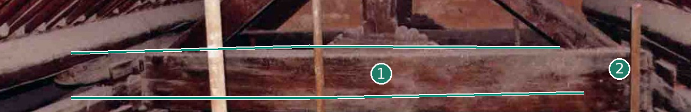
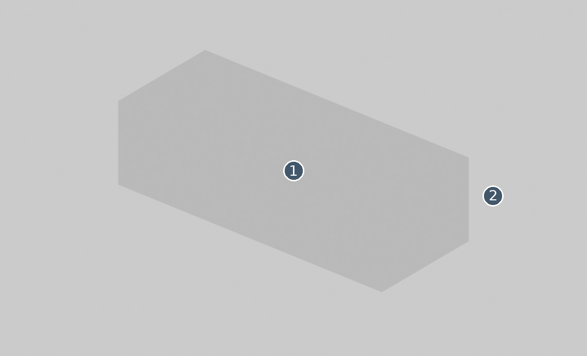
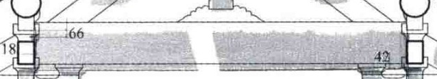
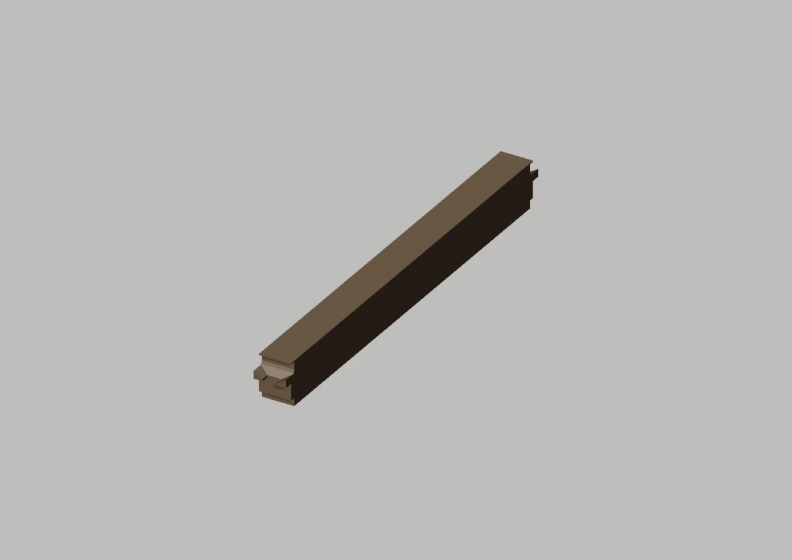
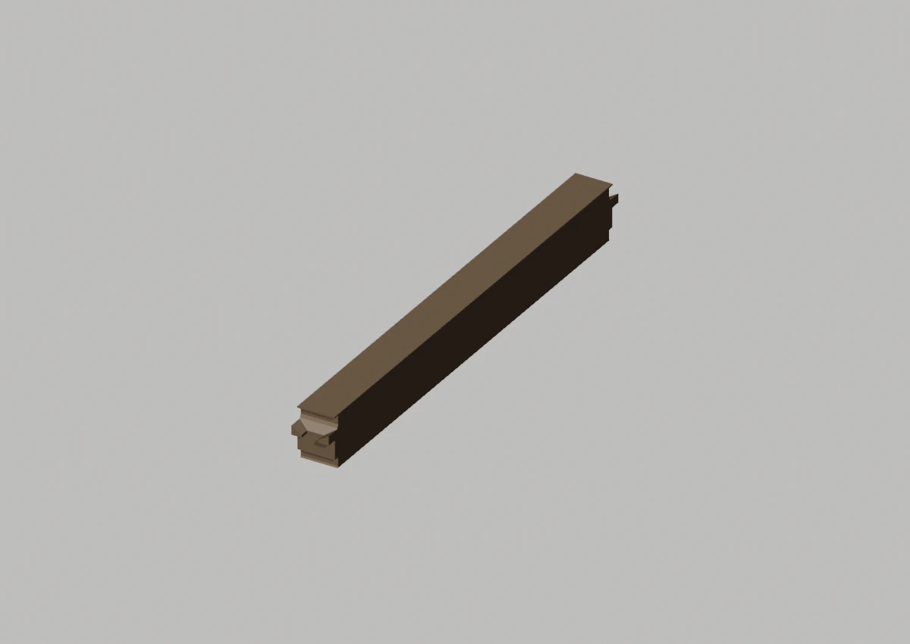
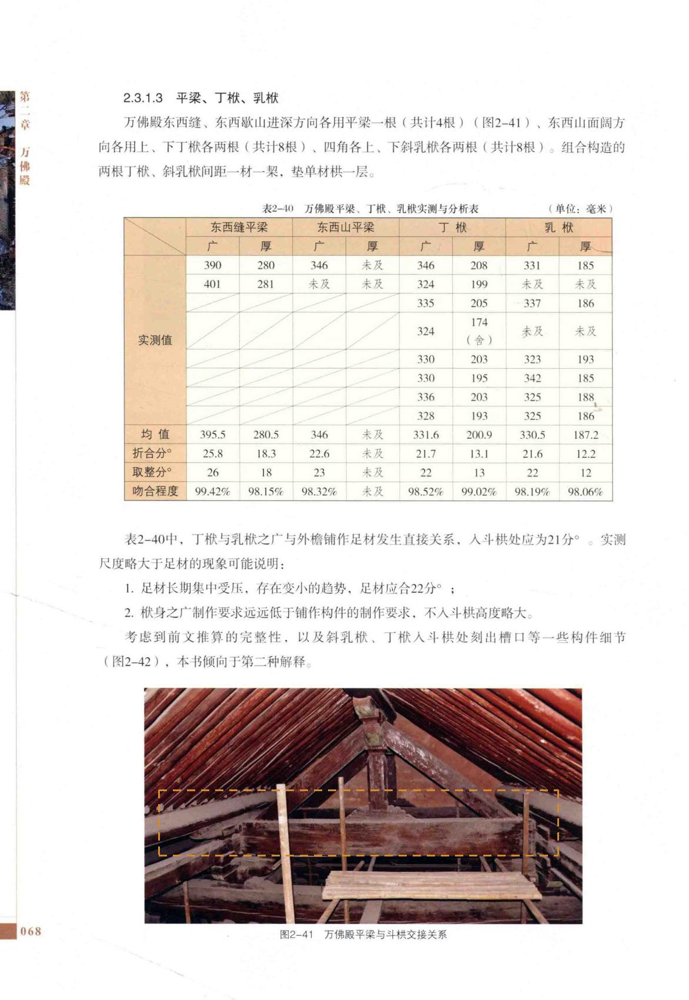

Master为直棱包络，未表达原物表面
先看形，再看差异


完整端面、榫卯仍被遮挡
定性对照：两侧未做比例归一或像素叠加。绿色实线只描原图可辨边缘；橙色虚框只表示原图查找范围。
02 / 形态细节
其他角度、截面与现有局部版本


现有局部工作模型 · 与 Master 分开看


03 / 原图与位置
目标在原始资料的哪里


安装位置与复用
东缝；西缝
变体：东西缝型
Master：CMP-FRAME-PINGLIANG-001_MASTER
对应实例范围（2条登记记录，不是物理件数）
- 平梁-东缝 · 东缝
- 平梁-西缝 · 西缝
04 / 证据与边界
出处、模型身份与未知部分
仍然未知：照片只能核对可见侧面；不能量出梁厚或以透视比例核定全长。
原工程记录（按原文保留）：东西缝与山面必须分开看；山面厚度未知。参考直棱体没有完整端部及现场形变；两种截面不能相互替代。

模型原始渲染、网格身份与批准范围
GitHub 已有审核渲染 沿用原有审核图；批准范围及外形证据限制保持。

east:PINGLIANG main工作V003：含局部批准和待审对象；此图不升级批准。

west:PINGLIANG main工作V003：含局部批准和待审对象；此图不升级批准。

A1、A2、A3共享测绘数据脉络，不作为三次独立复测。官方展示只作形态参考；推断、遮挡与未知不升级为实测事实。